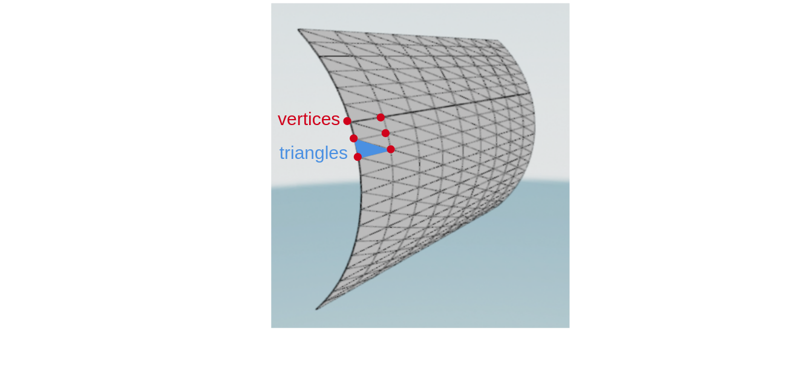

TriangleMesh3D#
- class TriangleMesh3D(vertices: ndarray, triangles: ndarray, uvmap: ndarray | None = None)[source]#
Represents a triangular 3D mesh with support for UV mapping and compatibility with:
meshio for mesh I/O operations.
open3d for visualization and manipulation.
This class is designed to handle triangular surface meshes in 3D space. It includes support for texture mapping (UV coordinates).
Warning
The number of vertices and triangles are not designed to change after the mesh is created !
Mesh Structure#
vertices: A NumPy array of shape (N, 3) representing the coordinates of N mesh vertices.triangles: A NumPy array of shape (M, 3) representing M triangular triangles defined by vertex indices.
import numpy from pyblenderSDIC.meshes import TriangleMesh3D # Create a simple triangle mesh with N=3 vertices and M=1 triangle. mesh = TriangleMesh3D( vertices=numpy.array([[0, 0, 0], [1, 0, 0], [0, 1, 0]]), triangles=numpy.array([[0, 1, 2]]) ) mesh.vertices # Access the vertices of the mesh (shape: (N, 3)) mesh.triangles # Access the triangles of the mesh (shape: (M, 3))

Vertices and triangles of a triangular mesh.#
Use the method
validateto check the validity of the mesh structure:mesh.validate() # Raises an exception if the mesh is invalid
By default the method validate is automatically called when the mesh is created,
Mesh Creation#
The mesh can be created by giving the vertices and triangles directly, or by using gateway functions:
DICT: Create a mesh from a dictionary containing vertices and triangles.JSON: Create a mesh from a JSON string or file containing vertices and triangles.MESHIO: Create a mesh from a meshio object or file.OPEN3D: Create a mesh from an open3d mesh object.VTK: Create a mesh from a VTK file.
UV Mapping#
The mesh supports UV mapping, allowing for texture coordinates to be associated with each vertex. UV coordinates can be set using the
set_uvmapmethod, which takes a NumPy array of shape (M, 6) where each row contains the UV coordinates for a triangle in the format (u1, v1, u2, v2, u3, v3). UV coordinates can be accessed using theuvmapproperty, which returns a NumPy array of shape (M, 6).The UV coordinates represents the position of each vertex in the normalized texture space, where (0, 0) is the bottom-left corner and (1, 1) is the top-right corner. By default, UV coordinates follow the OpenGL convention, which is also used by Blender and most 3D engines.
In this convention:
\(uv = (0, 0)\) corresponds to the bottom-left corner of the texture.
\(uv = (1, 0)\) corresponds to the bottom-right corner of the texture.
\(uv = (0, 1)\) corresponds to the top-left corner of the texture.
\(uv = (1, 1)\) corresponds to the top-right corner of the texture.
If all vertices have the same UV coordinates in each triangle, the mesh can be considered as having a single texture applied uniformly across all triangles and the method
set_vertices_uvmapcan be called with a single set of UV coordinates for all triangles.Other-quantity#
Other quantity of the mesh can also be computated, such as the number of vertices and triangles, the bounding box, and the volume of the mesh. These quantities can be accessed using the following properties:
bounding_box: The bounding box of the mesh, represented as a NumPy array of shape (2, 3) with the minimum and maximum coordinates in each dimension.volume: The volume of the mesh, computed using the green therorem for polyhedra.vertex_normals: The normals of the vertices in the mesh, computed as the average of the normals of the triangles that share each vertex.triangle_normals: The normals of the triangles in the mesh, computed as the cross product of the edges of each triangle.triangle_centroids: The centroids of the triangles in the mesh, computed as the average position of the vertices of each triangle.triangle_areas: The areas of the triangles in the mesh, computed using the cross product of the edges of each triangle.
This attributes are available only if there are already computed, otherwise they will return a None value. Use the
compute_*methods to compute these quantities if they are not already computed.Note
Any modification to the mesh vertices or triangles will invalidate these quantities, and they will need to be recomputed.
Mesh-Properties#
According to the Open3D documentation, the mesh properties are:
is_edge_manifoldis_edge_manifold_with_boundaryis_vertex_manifoldis_self_intersectingis_watertightis_orientable
- param vertices:
A NumPy array of shape (N, 3) representing the coordinates of N mesh vertices.
- type vertices:
numpy.ndarray
- param triangles:
A NumPy array of shape (M, 3) representing M triangular triangles defined by vertex indices.
- type triangles:
numpy.ndarray
- param uvmap:
A NumPy array of shape (M, 6) representing the UV coordinates for each triangle in the mesh. Each row should contain the UV coordinates in the format (u1, v1, u2, v2, u3, v3). If not provided, the mesh will not have UV mapping.
- type uvmap:
Optional[numpy.ndarray], optional
Examples
Create a simple triangle mesh with vertices and triangles:
import numpy from pyblenderSDIC.meshes import TriangleMesh3D vertices = numpy.array([ [0.0, 0.0, 0.0], [1.0, 0.0, 0.0], [0.0, 1.0, 0.0], [0.0, 0.0, 1.0], [1.0, 1.0, 1.0] ]) triangles = numpy.array([ [0, 2, 1], [0, 3, 2], [0, 1, 3], [1, 4, 3], [2, 3, 4], [2, 4, 1] ]) vertices_uvmap = numpy.array([ [0.0, 0.0], [1.0, 0.0], [0.0, 1.0], [1.0, 1.0], [0.5, 0.5] ]) mesh = TriangleMesh3D( vertices=vertices, triangles=triangles, uvmap=vertices_uvmap )
Save the mesh to a file in VTK format:
mesh.to_vtk("mesh.vtk")
Visualize the mesh using Open3D:
mesh.visualize()
{kind=link}
Create, Save and Load Meshes#
Create a TriangleMesh3D instance from a meshio.Mesh object. |
|
|
Create a TriangleMesh3D instance from a VTK file. |
Create a TriangleMesh3D instance from an Open3D TriangleMesh object. |
|
|
Create a TriangleMesh3D instance from a dictionary. |
|
Create a TriangleMesh3D instance from a JSON file. |
Convert the TriangleMesh3D instance to a meshio.Mesh object. |
|
|
Save the TriangleMesh3D instance to a VTK file. |
|
Convert the TriangleMesh3D instance to an Open3D TriangleMesh object. |
|
Convert the TriangleMesh3D instance to a dictionary. |
|
Save the TriangleMesh3D instance to a JSON file. |
Access and set TriangleMesh3D Data#
Get or set the positions of the mesh vertices. |
|
Get or set the indices of the mesh triangles. |
|
Get or set the UV map of the mesh. |
|
Set the UV mapping coordinates based on the vertices. |
|
Get the number of vertices in the mesh. |
|
Get the number of triangles in the mesh. |
|
Validate the mesh structure. |
Compute and access TriangleMesh3D Quantities#
Compute the bounding box of the mesh. |
|
Get the bounding box of the mesh. |
|
Compute the volume of the mesh. |
|
Get the volume of the mesh. |
|
Compute the normals of the vertices in the mesh. |
|
Get the normals of the vertices in the mesh. |
|
Compute the normals of the triangles in the mesh. |
|
Get the normals of the triangles in the mesh. |
|
Compute the areas of the triangles in the mesh. |
|
Get the areas of the triangles in the mesh. |
|
Compute the centroids of the triangles in the mesh. |
|
Get the centroids of the triangles in the mesh. |
Calculate the properties of the mesh#
Get the edge manifold property of the mesh. |
|
Get the edge manifold with boundary property of the mesh. |
|
Get the vertex manifold property of the mesh. |
|
Get the self-intersecting property of the mesh. |
|
Get the watertight property of the mesh. |
|
Get the orientable property of the mesh. |
Other Methods#
Calculate the intersection of rays with a given mesh using Open3D. |
|
|
Compute the intersection of rays with the mesh. |
Compute the shape function values at intersection points. |
|
Compute the 3D coordinates of intersection points from barycentric data. |
|
|
Visualize the mesh using Open3D. |